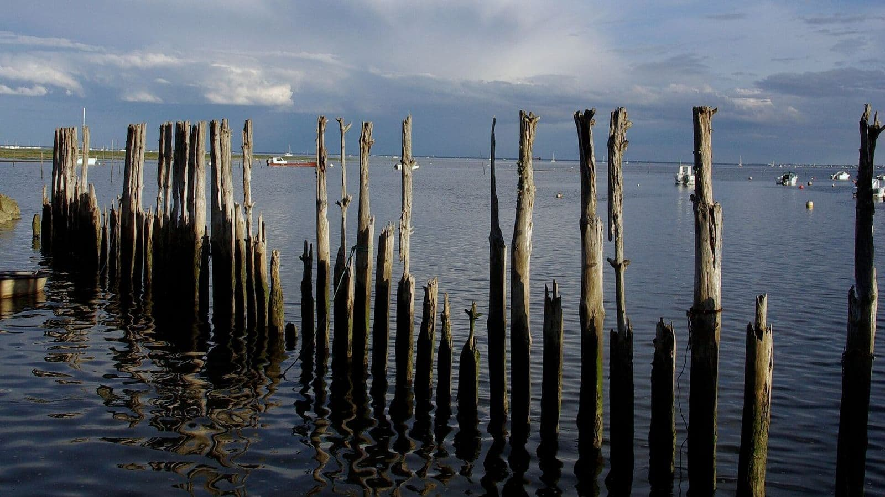
Découvrir Arès : 10 lieux à voir
Entre forêt et bassin d'Arcachon, Arès se découvre à pied, au fil de l'eau. Voici nos 10 coins préférés, choisis par l'équipe du Chiquito.
-
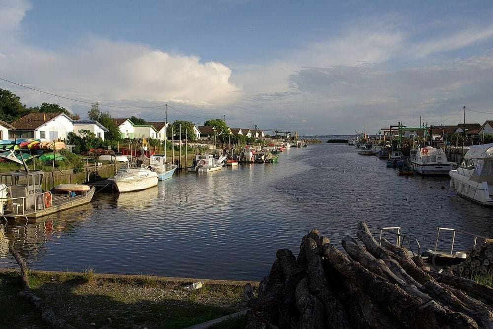
Le port ostréicole
Le cœur d'Arès bat ici : les bateaux des ostréiculteurs alignés le long du chenal, les maisons basses au bord de l'eau, et le bassin qui s'ouvre au bout.
Le plus beau moment : la fin de journée, quand la lumière dore le chenal.
Idéal en fin de journéeVoir sur la carte -
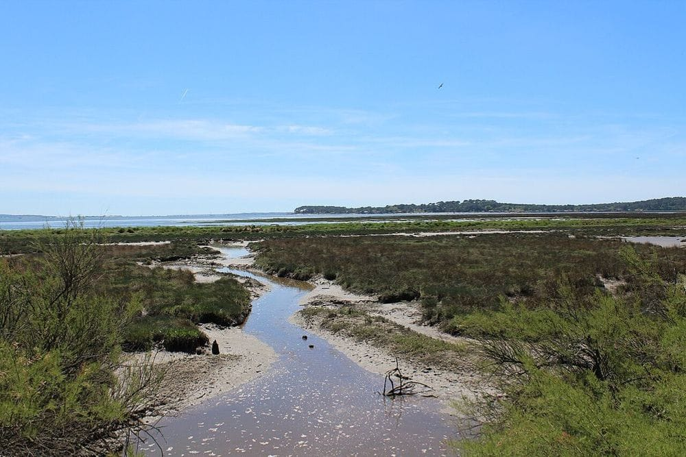
La réserve des prés salés
Réserve naturelle depuis 1983, ce sont les plus grands prés salés d'Aquitaine : des prairies que la marée vient inonder, entre Arès et Lège-Cap Ferret.
Environ 6 km de sentiers permettent de s'y promener au rythme des marées.
Chiens et vélos interditsVoir sur la carte -
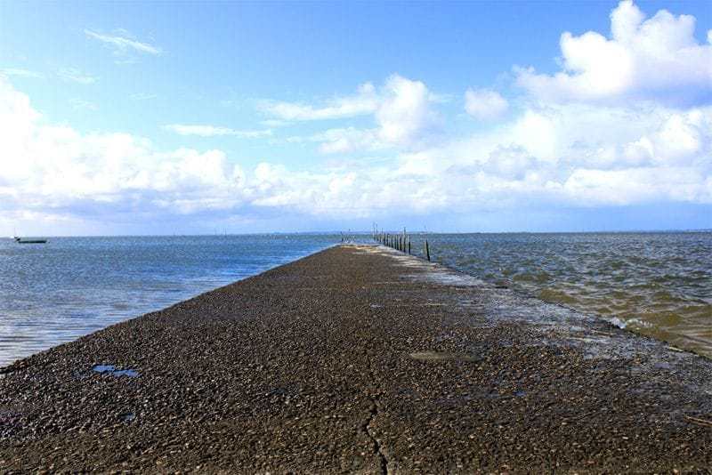
La jetée
Une longue avancée dans le bassin d'Arcachon. À marée haute, l'eau l'entoure des deux côtés : on a l'impression de marcher sur la mer.
Au bout, la vue s'étend sur tout le bassin.
À voir à marée hauteVoir sur la carte -
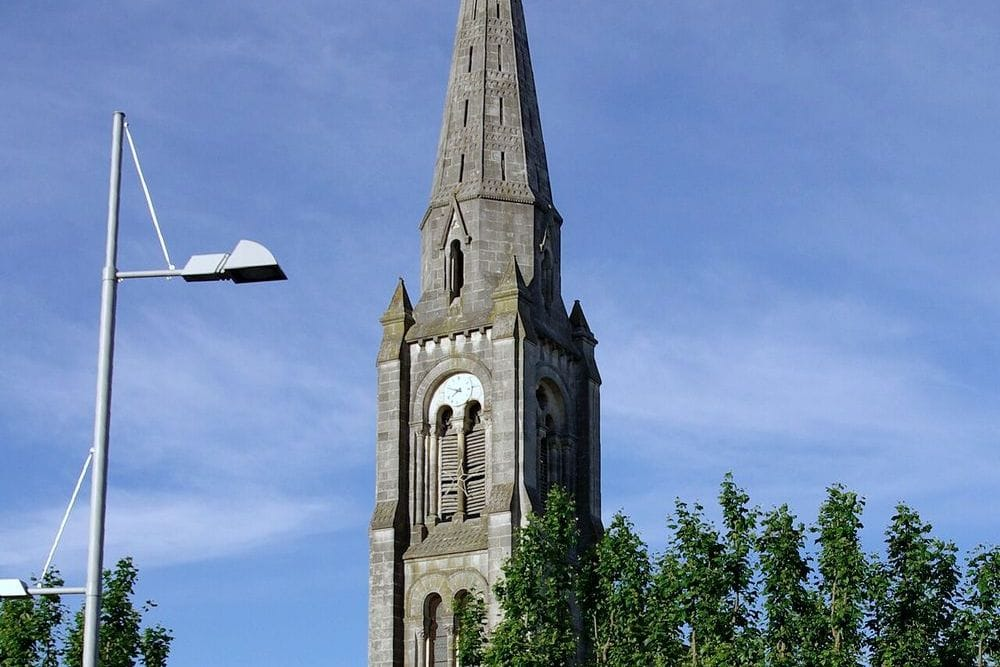
L'église Saint-Vincent-de-Paul
Construite de 1868 à 1878, elle domine le centre d'Arès avec son haut clocher de pierre.
À l'intérieur, ne manquez pas les vitraux de Raymond Mirande.
En plein centreVoir sur la carte -
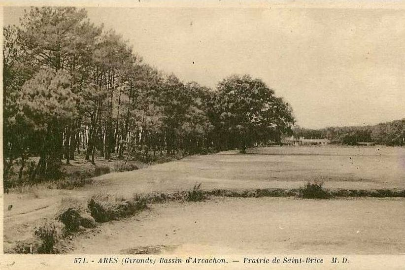
Le domaine de Saint-Brice
Un grand espace naturel protégé par le Conservatoire du littoral, entre pins, prairies et bord de bassin. Ici, sur une carte postale d'autrefois.
On peut le découvrir à pied par le sentier des 3 eaux (5 km).
Sentier des 3 eaux : 5 kmVoir sur la carte -
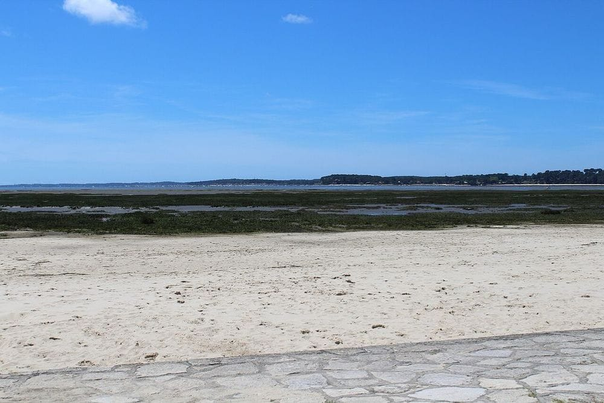
La plage d'Arès
Environ 2 km de sable, de la jetée jusqu'à Saint-Brice, face au bassin d'Arcachon.
À marée basse, le bassin se découvre et offre une tout autre promenade.
2 km, de la jetée à Saint-BriceVoir sur la carte -
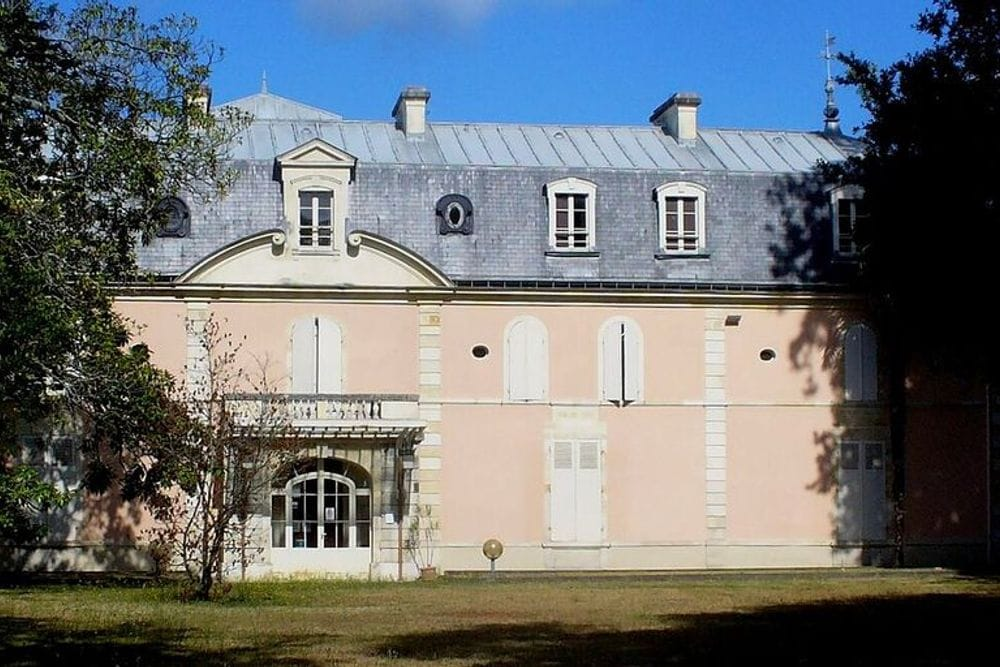
Le château d'Arès
Une élégante demeure aux façades roses, nichée dans son parc arboré. Elle a été reconstruite en 1849 par le banquier Léopold Javal, dont la famille a marqué l'histoire d'Arès.
Visible depuis l'avenue de la PlageVoir sur la carte -
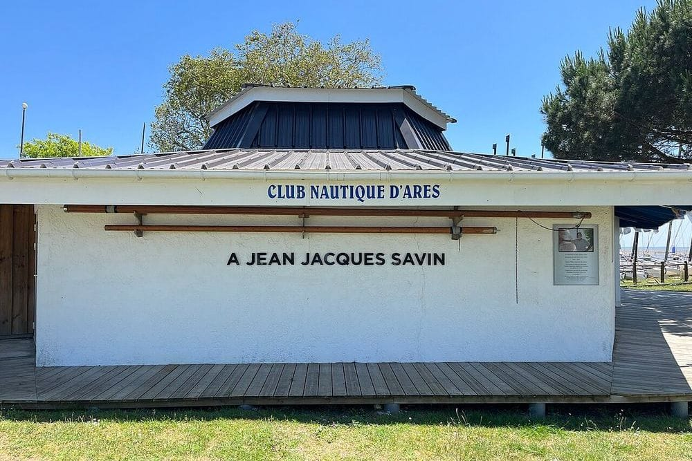
Le club nautique Jean-Jacques Savin
Le club nautique d'Arès est dédié à un enfant du pays, « amoureux du bassin ». En 2019, Jean-Jacques Savin (1947-2022) a traversé l'océan Atlantique à bord d'un tonneau, à la dérive.
Une plaque raconte son histoire sur le mur du club.
Une belle histoire d'ArèsVoir sur la carte -
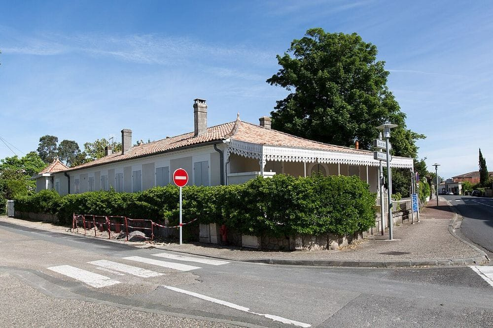
Les maisons à auvent
En flânant dans les rues, levez les yeux : certaines maisons basses arborent un auvent typique, avec sa frise de bois découpé comme de la dentelle.
Une balade tranquille pour découvrir les recoins d'Arès.
Balade à pied dans le bourg -
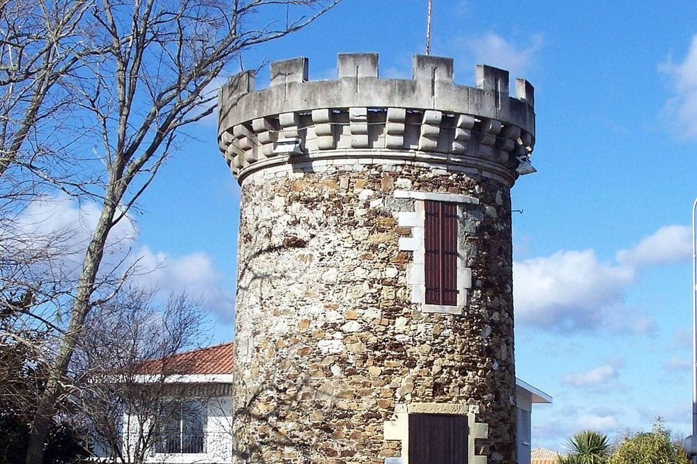
La tour d'Arès
Cette tour ronde à créneaux était à l'origine un moulin, construit en 1840. Elle a pris son allure de petit château fort en 1882.
Un petit air de château fortVoir sur la carte
Passez au Chiquito
Avant ou après la balade, passez nous voir : journaux, magazines, cartes postales et confiseries.
6 bis rue du 14 Juillet, 33740 Arès · 06 11 09 03 90
Lun-Mer & Ven-Sam 7h-12h30 | 14h30-19h30 · Jeudi & Dim matin 7h-12h30